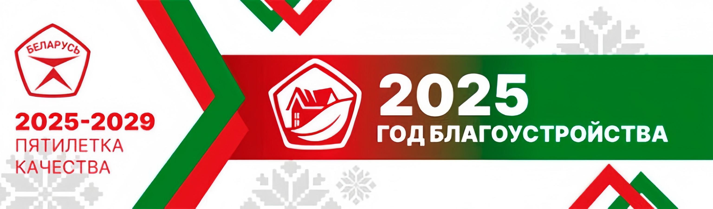

Ганаруся табой, мая краіна!
80 гадоў з Дня Перамогі. Ганаруся Віцебскам, яго гераічным мінулым і светлай будучыняй.
Даведацца большГісторыя Перамогі
Беларусь адыграла важную ролю ў Вялікай Айчыннай вайне. Нашы гарады і вёскі былі разбураны, але народ выстаяў і атрымаў перамогу!
Віцебск - горад-герой
Віцебск быў амаль поўнасцью разбураны падчас вайны, але ён паўстаў з руін і сёння з'яўляецца культурнай жамчужынай Беларусі.
Пяцігодка якасці
Беларусь робіць крок у будучыню, развіваючы тэхналогіі, прамысловасць і інфраструктуру, ствараючы камфортныя ўмовы для жыцця.
